Python
(This page has been taken from chapter 12C in the Csound FLOSS Manual.)
If CsoundQt is built with PythonQt support, it enables a lot of new possibilities, mostly in three main fields: interaction with the CsoundQt interface, interaction with widgets and using classes from Qt libraries to build custom interfaces in python.
If you start CsoundQt and can open the panels "Python Console" and "Python Scratch Pad", you are ready to go.
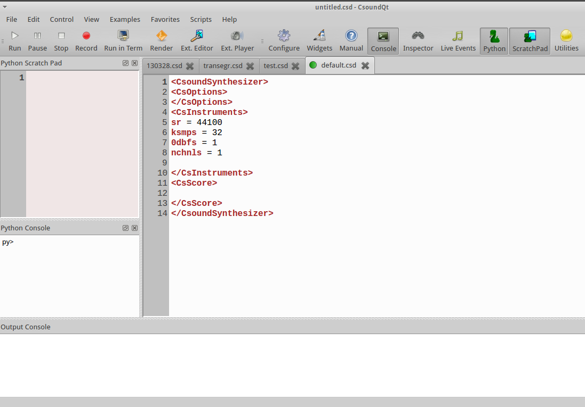
The CsoundQt Python Object¶
As CsoundQt has formerly been called QuteCsound, this name can still be found in the sources. The QuteCsound object (called PyQcsObject in the sources) is the interface for scripting CsoundQt. All declarations of the class can be found in the file pyqcsobject.h in the sources.
It enables the control of a large part of CsoundQt's possibilities from the python interpreter, the python scratchpad, from scripts or from inside of a running Csound file via Csound's python opcodes.
By default, a PyQcsObject is already available in the python interpreter of CsoundQt called “q”. To use any of its methods, use form like
q.stopAll()
The methods can be divided into four groups:
- access CsoundQt's interface (open or close files, start or stop performance etc)
- edit Csound files which has already been opened as tabs in CsoundQt
- manage CsoundQt's widgets
- interface with the running Csound engine
File and Control Access¶
If you have CsoundQt running on your computer, you should type the following code examples in the Python Console (if only one line) or the Python Scratch Pad (if more than one line of code).
Create or Load a csd File¶
Type q.newDocument('cs_floss_1.csd') in your Python Console and hit the Return key. This will create a new csd file named "cs_floss_1.csd" in your working directory. And it also returns an integer (in the screenshot below: 3) as index for this file.
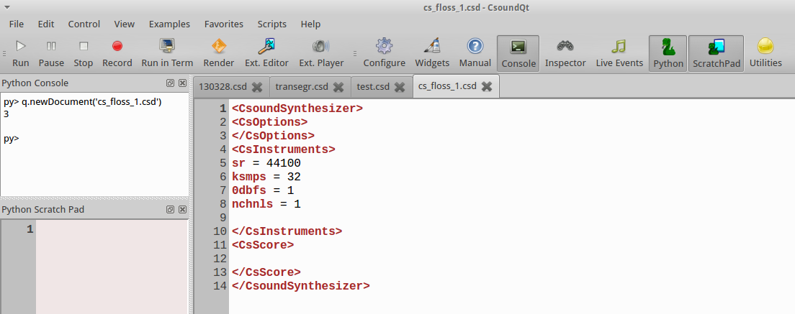
If you close this file and then execute the line q.loadDocument('cs_floss_1.csd'), you should see the file again as tab in CsoundQt.
Let us have a look how these two methods newDocument and loadDocument are described in the sources:
int newDocument(QString name)
int loadDocument(QString name, bool runNow = false)
The method newDocument needs a name as string ("QString") as argument, and returns an integer. The method loadDocument also takes a name as input string and returns an integer as index for this csd. The additional argument runNow is optional. It expects a boolean value (True/False or 1/0). The default is "false" which means "do not run immediately after loading". So if you type instead q.loadDocument('cs_floss_1.csd', True) or q.loadDocument('cs_floss_1.csd', 1), the csd file should start immediately.
Run, Pause or Stop a csd File¶
For the next methods, we first need some more code in our csd. So let your "cs_floss_1.csd" look like this:
<CsoundSynthesizer>
<CsOptions>
</CsOptions>
<CsInstruments>
sr = 44100
ksmps = 32
0dbfs = 1
nchnls = 1
giSine ftgen 0, 0, 1024, 10, 1
instr 1
kPitch expseg 500, p3, 1000
aSine poscil .2, kPitch, giSine
out aSine
endin
</CsInstruments>
<CsScore>
i 1 0 10
</CsScore>
</CsoundSynthesizer>
This instrument performs a simple pitch glissando from 500 to 1000 Hz in ten seconds. Now make sure that this csd is the currently active tab in CsoundQt, and execute this:
q.play()
This starts the performance. If you do nothing, the performance will stop after ten seconds. If you type instead after some seconds
q.pause()
the performance will pause. The same task q.pause() will resume the performance. Note that this is different from executing q.play() after q.pause() ; this will start a new performance. With
q.stop()
you can stop the current performance.
Access to Different csd Tabs via Indices¶
The play(), pause() and stop() method, as well as other methods in CsoundQt's integrated Python, allow also to access csd file tabs which are not currently active. As we saw in the creation of a new csd file by q.newDocument('cs_floss_1.csd'), each of them gets an index. This index allows universal access to all csd files in a running CsoundQt instance.
First, create a new file "cs_floss_2.csd", for instance with this code:
<CsoundSynthesizer>
<CsOptions>
</CsOptions>
<CsInstruments>
sr = 44100
ksmps = 32
0dbfs = 1
nchnls = 1
giSine ftgen 0, 0, 1024, 10, 1
instr 1
kPitch expseg 500, p3, 1000
aSine poscil .2, kPitch, giSine
out aSine
endin
</CsInstruments>
<CsScore>
i 1 0 10
</CsScore>
</CsoundSynthesizer>
Now get the index of these two tabs in executing q.getDocument('cs_floss_1.csd') resp. q.getDocument('cs_floss_2.csd') . This will show something like this:
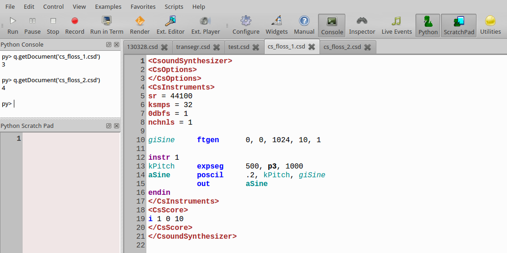
So in my case the indices are 3 and 4.5 Now you can start, pause and stop any of these files with tasks like these:
q.play(3)
q.play(4)
q.stop(3)
q.stop(4)
If you have checked "Allow simultaneous play" in CsoundQt's Configure->General ...
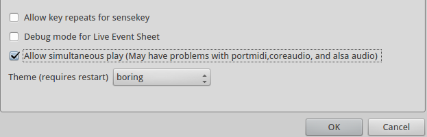
.. you should be able to run both csds simultaneously. To stop all running files, use:
q.stopAll()
To set a csd as active, use setDocument(index). This will have the same effect as clicking on the tab.
Send Score Events¶
Now comment out the score line in the file "cs_floss_2.csd", or simply remove it. When you now start Csound, this tab should run. Now execute this command:
q.sendEvent('i 1 0 2')
This should trigger instrument 1 for two seconds.
Query File Name or Path¶
In case you need to know the name or the path of a csd file, you have these functions:
getFileName()
getFilePath()
Calling the method without any arguments, it refers to the currently active csd. An index as argument links to a specific tab. Here is a Python code snippet which returns indices, file names and file paths of all tabs in CsoundQt:
index = 0
while q.getFileName(index):
print 'index = %d' % index
print ' File Name = %s' % q.getFileName(index)
print ' File Path = %s' % q.getFilePath(index)
index += 1
Which returns for instance:
index = 0
File Name = /home/jh/Joachim/Stuecke/30Carin/csound/130328.csd
File Path = /home/jh/Joachim/Stuecke/30Carin/csound
index = 1
File Name = /home/jh/src/csoundmanual/examples/transegr.csd
File Path = /home/jh/src/csoundmanual/examples
index = 2
File Name = /home/jh/Arbeitsfläche/test.csd
File Path = /home/jh/Arbeitsfläche
index = 3
File Name = /home/jh/Joachim/Csound/FLOSS/Release03/Chapter_12C_PythonInCsoundQt/cs_floss_1.csd
File Path = /home/jh/Joachim/Csound/FLOSS/Release03/Chapter_12C_PythonInCsoundQt
index = 4
File Name = /home/jh/Joachim/Csound/FLOSS/Release03/Chapter_12C_PythonInCsoundQt/cs_floss_2.csd
File Path = /home/jh/Joachim/Csound/FLOSS/Release03/Chapter_12C_PythonInCsoundQt
Get and Set csd Text¶
One of the main features of Python scripting in CsoundQt is the ability to edit any section of a csd file. There are several "get" functions, to query text, and also "set" functions to change or insert text.
Get Text from a csd File¶
Make sure your "cs_floss_2.csd" is the active tab, and execute the following python code lines:
q.getCsd()
q.getOrc()
q.getSco()
The q.getOrc() task should return this:
u'\nsr = 44100\nksmps = 32\n0dbfs = 1\nnchnls = 1\n\ngiSine ftgen 0, 0, 1024, 10, 1\n\ninstr 1\nkPitch expseg 1000, p3, 500\naSine poscil .2, kPitch, giSine\n out aSine\nendin\n'
The u'...' indicates that a unicode string is returned. As usual in format expressions, newlines are indicated with the '\n' formatter.
You can also get the text for the CsOptions, the text for CsoundQt's widgets and presets, or the full text of this csd:
getOptionsText()
getWidgetsText()
getPresetsText()getCsd()
getFullText()
If you select some text or some widgets, you will get the selection with these commands:
getSelectedText()
getSelectedWidgetsText()
As usual, you can specify any of the loaded csds via its index. So calling q.getOrc(3) instead of q.getOrc() will return the orc text of the csd with index 3, instead of the orc text of the currently active csd.
Set Text in a csd File¶
Set the cursor anywhere in your active csd, and execute the following line in the Python Console:
q.insertText('my nice insertion')
You will see your nice insertion in the csd file. In case you do not like it, you can choose Edit->Undo. It does not make a difference for the CsoundQt editor whether the text has been typed by hand, or by the internal Python script facility.
Text can also be inserted to individual sections using the functions:
setCsd(text)
setFullText(text)
setOrc(text)
setSco(text)
setWidgetsText(text)
setPresetsText(text)
setOptionsText(text)
Note that the whole section will be overwritten with the string text.
Opcode Exists¶
You can ask whether a string is an opcode name, or not, with the function opcodeExtists, for instance:
py> q.opcodeExists('line')
True
py> q.opcodeExists('OSCsend')
True
py> q.opcodeExists('Line')
False
py> q.opcodeExists('Joe')
NotYet
Example: Score Generation¶
A typical application for setting text in a csd is to generate a score. There have been numerous tools and programs to do this, and it can be very pleasant to use CsoundQt's Python scripting for this task. Let us modify our previous instrument first to make it more flexible:
<CsoundSynthesizer>
<CsOptions>
</CsOptions>
<CsInstruments>
sr = 44100
ksmps = 32
0dbfs = 1
nchnls = 1
giSine ftgen 0, 0, 1024, 10, 1
instr 1
iOctStart = p4 ;pitch in octave notation at start
iOctEnd = p5 ;and end
iDbStart = p6 ;dB at start
iDbEnd = p7 ;and end
kPitch expseg cpsoct(iOctStart), p3, cpsoct(iOctEnd)
kEnv linseg iDbStart, p3, iDbEnd
aSine poscil ampdb(kEnv), kPitch, giSine
iFad random p3/20, p3/5
aOut linen aSine, iFad, p3, iFad
out aOut
endin
</CsInstruments>
<CsScore>
i 1 0 10 ;will be overwritten by the python score generator
</CsScore>
</CsoundSynthesizer>
The following code will now insert 30 score events in the score section:
from random import uniform
numScoEvents = 30
sco = ''
for ScoEvent in range(numScoEvents):
start = uniform(0, 40)
dur = 2**uniform(-5, 3)
db1, db2 = [uniform(-36, -12) for x in range(2)]
oct1, oct2 = [uniform(6, 10) for x in range(2)]
scoLine = 'i 1 %f %f %f %f %d %d\n' % (start, dur, oct1, oct2, db1, db2)
sco = sco + scoLine
q.setSco(sco)
This generates a texture with either falling or rising gliding pitches. The durations are set in a way that shorter durations are more frequently than larger ones. The volume and pitch ranges allow many variations in the simple shape.
Widgets¶
Creating a Label¶
Click on the "Widgets" button to see the widgets panel. Then execute this command in the Python Console:
q.createNewLabel()
The properties dialog of the label pops up. Type "Hello Label!" or something like this as text.
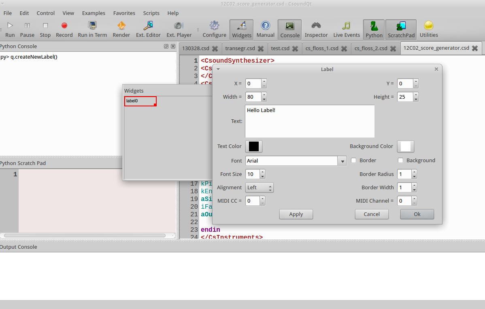
When you click "Ok", you will see the label widget in the panel, and a strange unicode string as return value in the Python Console:
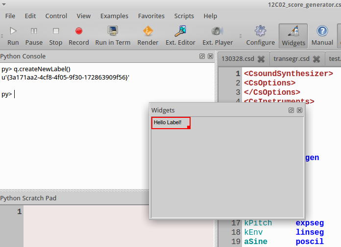
The string u'{3a171aa2-4cf8-4f05-9f30-172863909f56}' is a "universally unique identifier" (uuid). Each widget can be accessed by this ID.
Specifying the Common Properties as Arguments¶
Instead of having a live talk with the properties dialog, we can specify all properties as arguments for the createNewLabel method:
q.createNewLabel(200, 100, "second_label")
This should be the result:
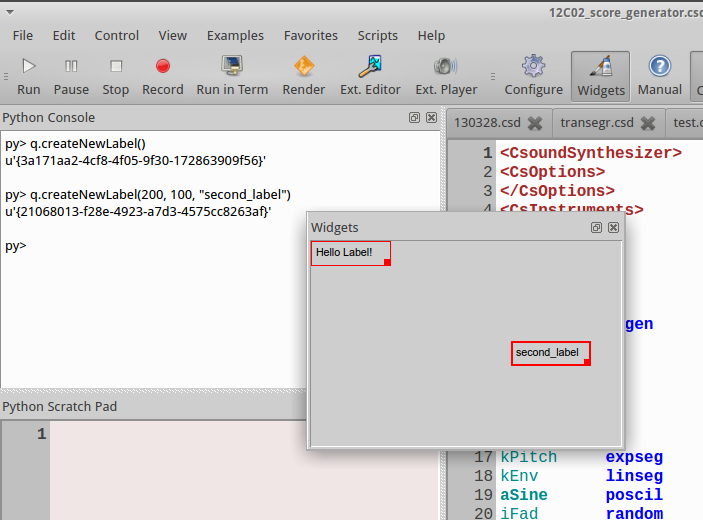
A new label has been created—without opening the properties dialog—at position x=200 y=1008 with the name "second_label". If you want to create a widget not in the active document, but in another tab, you can also specify the tab index. This command will create a widget at the same position and with the same name in the first tab:
q.createNewLabel(200, 100, "second_label", 0)
Setting the Specific Properties
Each widget has a xy position and a channel name. But the other properties depend on the type of widget. A Display has name, width and height, but no resolution like a SpinBox. The function setWidgetProperty refers to a widget via its ID and sets a property. Let us try this for a Display widget. This command creates a Display widget with channel name "disp_chan_01" at position x=50 y=150:
q.createNewDisplay(50, 150, "disp_chan_01")
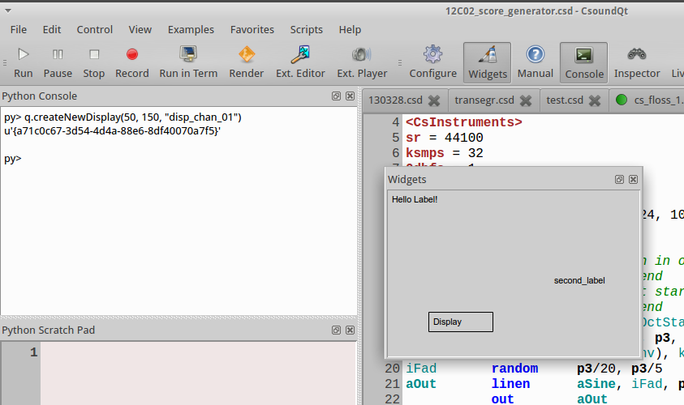
And this sets the text to a new string:
q.setWidgetProperty("disp_chan_01", "QCS_label", "Hey Joe!")
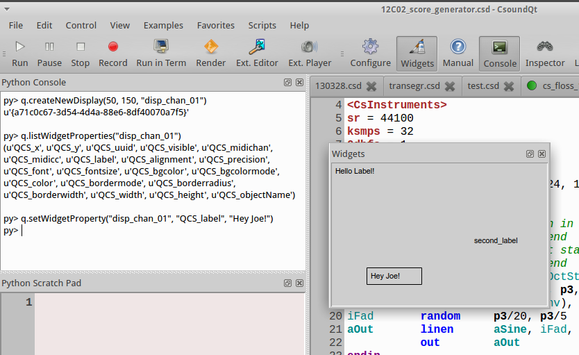
The setWidgetProperty method needs the ID of a widget first. This can be expressed either as channel name ("disp_chan_01") as in the command above, or as uuid. As I got the string u'{a71c0c67-3d54-4d4a-88e6-8df40070a7f5}' as uuid, I can also write:
q.setWidgetProperty(u'{a71c0c67-3d54-4d4a-88e6-8df40070a7f5}', "QCS_label", "Hey Joeboe!")
For humans, referring to the channel name as ID is probably preferable ... - But as the createNew... method returns the uuid, you can use it implicitely, for instance in this command:
q.setWidgetProperty(q.createNewLabel(70, 70, "WOW"), "QCS_fontsize", 18)
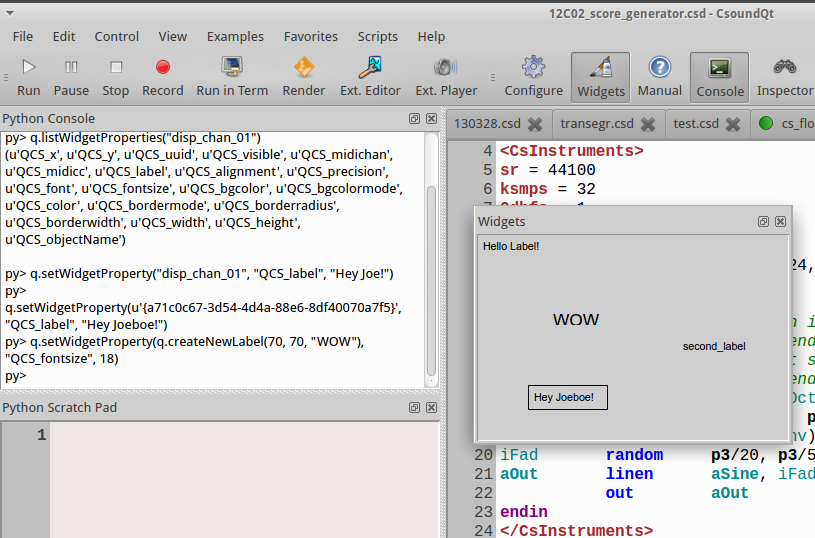
Getting the Property Names and Values¶
You may have asked how to know that the visible text of a Display widget is called "QCS_label" and the fontsize "QCS_fontsize". If you do not know the name of a property, ask CsoundQt for it via the function listWidgetProperties:
py> q.listWidgetProperties("disp_chan_01")
(u'QCS_x', u'QCS_y', u'QCS_uuid', u'QCS_visible', u'QCS_midichan', u'QCS_midicc', u'QCS_label', u'QCS_alignment', u'QCS_precision', u'QCS_font', u'QCS_fontsize', u'QCS_bgcolor', u'QCS_bgcolormode', u'QCS_color', u'QCS_bordermode', u'QCS_borderradius', u'QCS_borderwidth', u'QCS_width', u'QCS_height', u'QCS_objectName')
As you see, listWidgetProperties returns all properties in a tuple. You can query the value of a single property with the function getWidgetProperty, which takes the uuid and the property as inputs, and returns the property value. So this code snippet asks for all property values of our Display widget:
widgetID = "disp_chan_01"
properties = q.listWidgetProperties(widgetID)
for property in properties:
propVal = q.getWidgetProperty(widgetID, property)
print property + ' = ' + str(propVal)
Returns: QCS_x = 50 QCS_y = 150 QCS_uuid = {a71c0c67-3d54-4d4a-88e6-8df40070a7f5} QCS_visible = True QCS_midichan = 0 QCS_midicc = -3 QCS_label = Hey Joeboe! QCS_alignment = left QCS_precision = 3 QCS_font = Arial QCS_fontsize = 10 QCS_bgcolor = #ffffff QCS_bgcolormode = False QCS_color = #000000 QCS_bordermode = border QCS_borderradius = 1 QCS_borderwidth = 1 QCS_width = 80 QCS_height = 25 QCS_objectName = disp_chan_01
Get the UUIDs of all Widgets¶
For getting the uuid strings of all widgets in the active csd tab, type
q.getWidgetUuids()
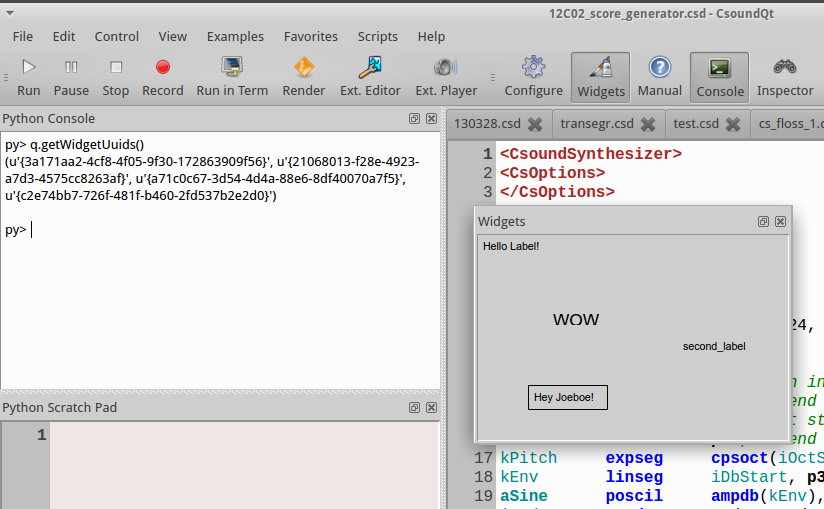
As always, the uuid strings of other csd tabs can be accessed via the index.
Some Examples for Creating and Modifying Widgets¶
Create a new slider with the channel name "level" at position 10,10 in the (already open but not necessarily active) document "test.csd":
q.createNewSlider(10, 10, "level", q.getDocument("test.csd"))
Create ten knobs with the channel names "partial_1", "partial_2" etc, and the according labels "amp_part_1", "amp_part_2" etc in the currently active document:
for no in range(10):
q.createNewKnob(100*no, 5, "partial_"+str(no+1))
q.createNewLabel(100*no+5, 90, "amp_part_"+str(no+1))
Alternatively, you can store the uuid strings while creating:
knobs, labels = [], []
for no in range(10):
knobs.append(q.createNewKnob(100*no, 5, "partial_"+str(no+1)))
labels.append(q.createNewLabel(100*no+5, 90, "amp_part_"+str(no+1)))
The variables knobs and labels now contain the IDs:
py> knobs
[u'{8d10f9e3-70ce-4953-94b5-24cf8d6f6adb}', u'{d1c98b52-a0a1-4f48-9bca-bac55dad0de7}', u'{b7bf4b76-baff-493f-bc1f-43d61c4318ac}', u'{1332208d-e479-4152-85a8-0f4e6e589d9d}', u'{428cc329-df4a-4d04-9cea-9be3e3c2a41c}', u'{1e691299-3e24-46cc-a3b6-85fdd40eac15}', u'{a93c2b27-89a8-41b2-befb-6768cae6f645}', u'{26931ed6-4c28-4819-9b31-4b9e0d9d0a68}', u'{874beb70-b619-4706-a465-12421c6c8a85}', u'{3da687a9-2794-4519-880b-53c2f3b67b1f}']
py> labels
[u'{9715ee01-57d5-407d-b89a-bae2fc6acecf}', u'{71295982-b5e7-4d64-9ac5-b8fbcffbd254}', u'{09e924fa-2a7c-47c6-9e17-e710c94bd2d1}', u'{2e31dbfb-f3c2-43ab-ab6a-f47abb4875a3}', u'{adfe3aef-4499-4c29-b94a-a9543e54e8a3}', u'{b5760819-f750-411d-884c-0bad16d68d09}', u'{c3884e9e-f0d8-4718-8fcb-66e82456f0b5}', u'{c1401878-e7f7-4e71-a097-e92ada42e653}', u'{a7d14879-1601-4789-9877-f636105b552c}', u'{ec5526c4-0fda-4963-8f18-1c7490b0a667}'
Move the first knob 200 pixels downwards:
q.setWidgetProperty( knobs[0], "QCS_y", q.getWidgetProperty(knobs[0], "QCS_y")+200)
Modify the maximum of each knob so that the higher partials have less amplitude range (set maximum to 1, 0.9, 0.8, ..., 0.1):
for knob in range(10):
q.setWidgetProperty(knobs[knob], "QCS_maximum", 1-knob/10.0)
Deleting widgets¶
You can delete a widget using the method destroyWidget. You have to pass the widget's ID, again either as channel name or (better) as uuid string. This will remove the first knob in the example above:
q.destroyWidget("partial_1")
This will delete all knobs:
for w in knobs:
q.destroyWidget(w)
And this will delete all widgets of the active document:
for w in q.getWidgetUuids():
q.destroyWidget(w)
Getting and Setting Channel Names and Values¶
After this cruel act of destruction, let us again create a slider and a display:
py> q.createNewSlider(10, 10, "level")
u'{b0294b09-5c87-4607-afda-2e55a8c7526e}'
py> q.createNewDisplay(50, 10, "message")
u'{a51b438f-f671-4108-8cdb-982387074e4d}'
Now we will ask for the values of these widgets with the methods getChannelValue and getChannelString:
py> q.getChannelValue('level')
0.0
py> q.getChannelString("level")
u''
py> q.getChannelValue('message')
0.0
py> q.getChannelString('message')
u'Display'
As you see, it depends on the type of the widget whether to query its value by getChannelValue or getChannelString. Although CsoundQt will not return an error, it makes no sense to ask a slider for its string (as its value is a number), and a display for its number (as its value is a string).
With the methods setChannelValue and setChannelString we can change the main content of a widget very easily:
py> q.setChannelValue("level", 0.5)
py> q.setChannelString("message", "Hey Joe again!")
This is much more handy than the general method using setWidgetProperty:
py> q.setWidgetProperty("level", "QCS_value", 1)
py> q.setWidgetProperty("message", "QCS_label", "Nono")
Presets¶
Now right-click in the widget panel and choose Store Preset -> New Preset:
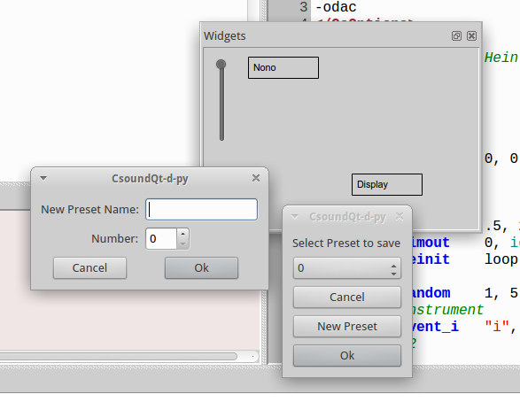
You can (but need not) enter a name for the preset. The important thing here is the number of the preset (here 0). - Now change the value of the slider and the text of the display widget. Save again as preset, now being preset 1. - Now execute this:
q.loadPreset(0)
You will see the content of the widgets reloaded to the first preset. Again, with
q.loadPreset(1)
you can switch to the second one.
Like all python scripting functions in CsoundQt, you can not only use these methods from the Python Console or the Python Cratch Pad, but also from inside any csd. This is an example how to switch all the widgets to other predefined states, in this case controlled by the score. You will see the widgets for the first three seconds in Preset 0, then for the next three seconds in Preset 1, and finally again in Preset 0:
<CsoundSynthesizer>
<CsOptions>
-odac
</CsOptions>
<CsInstruments>
pyinit
instr loadPreset
index = p4
pycalli "q.loadPreset", index
endin
</CsInstruments>
<CsScore>
i "loadPreset" 0 3 0
i "loadPreset" + . 1
i "loadPreset" + . 0
</CsScore>
</CsoundSynthesizer>
Csound Functions¶
Several functions can interact with the Csound engine, for example to query information about it. Note that the functions getSampleRate, getKsmps, getNumChannels and getCurrentCsound refer to a running instance of Csound.
py> q.getVersion() # CsoundQt API version
u'1.0'
py> q.getSampleRate()
44100.0
py> q.getKsmps()
32
py> q.getNumChannels()
1
py> q.getCurrentCsound()
CSOUND (C++ object at: 0x2fb5670)
With getCsChannel, getCsStringChannel and setCsChannel you can access csound channels directly, independently from widgets. They are useful when testing a csd for use with the Csound API (in another application, a csLapdsa or Cabbage plugin, Android application) or similar. These are some examples, executed on a running csd instance:
py> q.getCsChannel('my_num_chn')
0.0
py> q.getCsStringChannel('my_str_chn')
u''
py> q.setCsChannel('my_num_chn', 1.1)
py> q.setCsChannel('my_str_chn', 'Hey Csound')
py> q.getCsChannel('my_num_chn')
1.1
py> q.getCsStringChannel('my_str_chn')
u'Hey Csound'
If you have a function table in your running Csound instance which has for instance been created with the line giSine ftgen 1, 0, 1024, 10, 1, you can query getTableArray like this:
py> q.getTableArray(1)
MYFLT (C++ object at: 0x35d1c58)
Finally, you can register a Python function as a callback to be executed in between processing blocks for Csound. The first argument should be the text that should be called on every pass. It can include arguments or variables which will be evaluated every time. You can also set a number of periods to skip to avoid.
registerProcessCallback(QString func, int skipPeriods = 0)
You can register the python text to be executed on every Csound control block callback, so you can execute a block of code, or call any function which is already defined.
Creating Own GUIs with PythonQt¶
One of the very powerful features of using Python inside CsoundQt is the ability to build own GUIs. This is done via the PythonQt library which gives you access to the Qt toolkit via Python. We will show some examples here. Have a look in the "Scripts" menu in CsoundQt to find much more (you will find the code in the "Editor" submenu).
Dialog Box¶
Sometimes it is practical to ask from user just one question - number or name of something and then execute the rest of the code (it can be done also inside a csd with python opcodes). In Qt, the class to create a dialog for one question is called QInputDialog.
To use this or any other Qt classes, it is necessary to import the PythonQt and its Qt submodules. In most cases it is enough to add this line:
from PythonQt.Qt import *
or
from PythonQt.QtGui import *
At first an object of QInputDialog must be defined, then you can use its methods getInt, getDouble, getItem or getText to read the input in the form you need. This is a basic example:
from PythonQt.Qt import *
inpdia = QInputDialog()
myInt = inpdia.getInt(inpdia,"Example 1","How many?")
print myInt
Note that the variable myInt is now set to a value which remains in your Python interpreter. Your Python Console may look like this when executing the code above, and then ask for the value of myInt:
py>
12
Evaluated 5 lines.
py> myInt
12
Depending on the value of myInt, you can do funny or serious things. This code re-creates the Dialog Box whenever the user enters the number 1:
from PythonQt.Qt import *
def again():
inpdia = QInputDialog()
myInt = inpdia.getInt(inpdia,"Example 1","How many?")
if myInt == 1:
print "If you continue to enter '1' I will come back again and again."
again()
else:
print "Thanks - Leaving now."
again()
This is a simple example showing how you can embed an own GUI in your Csound code. Here, Csound waits for the user input, and the prints out the entered value as the Csound variable giNumber:
<CsoundSynthesizer>
<CsOptions>
-n
</CsOptions>
<CsInstruments>
pyinit
pyruni {{
from PythonQt.Qt import *
dia = QInputDialog()
dia.setDoubleDecimals(4)
}}
giNumber pyevali {{
dia.getDouble(dia,"CS question","Enter number: ")
}} ; get the number from Qt dialog
instr 1
print giNumber
endin
</CsInstruments>
<CsScore>
i 1 0 0
</CsScore>
</CsoundSynthesizer>
Simple GUI with Buttons¶
The next example takes the user input (as a string) and transforms it to a sounding sequence of notes. First, make sure that the following csd is your active tab in CsoundQt:
<CsoundSynthesizer>
<CsInstruments>
sr = 44100
nchnls = 2
0dbfs = 1
ksmps = 32
giSine ftgen 1, 0, 4096, 10, 1 ; sine
#define MAINJOB(INSTNO) #
Sstr strget p4
ilen strlen Sstr
ipos = 0
marker: ; convert every character in the string to pitch
ichr strchar Sstr, ipos
icps = cpsmidinn(ichr)-$INSTNO*8
;print icps
event_i "i", "sound", 0+ipos/8, p3, ichr,icps, $INSTNO ; chord with arpeggio
loop_lt ipos, 1, ilen, marker
#
instr 1
$MAINJOB(1)
endin
instr 2
$MAINJOB(2)
endin
instr 3
$MAINJOB(3)
endin
instr sound
ichar = p4
ifreq = p5
itype = p6
kenv linen 0.1,0.1, p3,0.5
if itype== 1 then
asig pluck kenv,ifreq,ifreq,0, 3, 0
elseif itype==2 then
kenv adsr 0.05,0.1,0.5,1
asig poscil kenv*0.1,ifreq,giSine
else
asig buzz kenv,ifreq,10, giSine
endif
outs asig,asig
endin
</CsInstruments>
<CsScore>
f0 3600
i 1 0 4 "huhuu"
</CsScore>
</CsoundSynthesizer>
Now copy this Python code into your Python Scratch Pad and evaluate it. Then type anything in the "type here" box and push the "insert" button. After pushing "play", the string will be played. You can also send the string as real-time event, to different instruments, in different durations.
from PythonQt.Qt import *
# FUNCTIONS==============================
def insert(): # read input from UI and insert a line to score of csd file, open in CsoundQt with index csdIndex
scoreLine = "f0 3600\n" + "i " + instrSpinBox.text + " 0 " + durSpinBox.text + ' "' + par1LineEdit.text + "\""
print scoreLine
q.setSco(scoreLine, csdIndex)
def play(): # play file with index csdIndex
print "PLAY"
q.play(csdIndex)
def send(): # read input from UI send live event
scoreLine = "i " + instrSpinBox.text + " 0 " + durSpinBox.text + ' "' + par1LineEdit.text + "\""
print scoreLine
q.sendEvent(csdIndex, scoreLine)
def stopAndClose(): #stop csdIndex, close UI
print "STOP"
q.stop(csdIndex)
window.delete()
# MAIN ====================================
window = QWidget() # window as main widget
layout = QGridLayout(window) # use gridLayout - the most flexible one - to place the widgets in a table-like structure
window.setLayout(layout)
window.setWindowTitle("PythonQt inteface example")
instrLabel = QLabel("Select instrument")
layout.addWidget(instrLabel,0,0) # first row, first column
instrSpinBox = QSpinBox(window)
instrSpinBox.setMinimum(1)
instrSpinBox.setMaximum(3)
layout.addWidget(instrSpinBox, 0, 1) # first row, second column
durLabel = QLabel("Duration: ")
layout.addWidget(durLabel,1,0) # etc
durSpinBox = QSpinBox(window)
durSpinBox.setMinimum(1)
durSpinBox.setMaximum(20)
durSpinBox.setValue(3)
layout.addWidget(durSpinBox, 1, 1)
par1Label = QLabel("Enter string for parameter 1: ")
layout.addWidget(par1Label,2,0)
par1LineEdit = QLineEdit(window)
par1LineEdit.setMaxLength(30) # don't allow too long strings
par1LineEdit.setText("type here")
layout.addWidget(par1LineEdit,2,1)
insertButton = QPushButton("Insert",window)
layout.addWidget(insertButton, 3,0)
playButton = QPushButton("Play",window)
layout.addWidget(playButton, 3,1)
sendButton = QPushButton("Send event",window)
layout.addWidget(sendButton, 4,0)
closeButton = QPushButton("Close",window)
layout.addWidget(closeButton, 4,1)
# connect buttons and functions ================
#NB! function names must be without parenthesis!
# number and type of arguments of the signal and slot (called function) must match
insertButton.connect(SIGNAL("clicked()"),insert ) # when clicked, run function insert()
playButton.connect(SIGNAL("clicked()"),play) #etc
sendButton.connect(SIGNAL("clicked()"),send)
closeButton.connect(SIGNAL("clicked()"),stopAndClose)
window.show() # show the window and wait for clicks on buttons
Another nice example of Tarmo Johannes, color-controller.py, is included in the CsoundQt application.
List of PyQcsObject Methods in CsoundQt¶
Load/Create/Activate a csd File¶
int loadDocument(QString name, bool runNow = false)
int getDocument(QString name = "")
int newDocument(QString name)
void setDocument(int index)
Play/Pause/Stop a csd File¶
void play(int index = -1, bool realtime = true)
void pause(int index = -1)
void stop(int index = -1)
void stopAll()
Send Score Events¶
void sendEvent(int index, QString events)
void sendEvent(QString events)
void schedule(QVariant time, QVariant event)
Query File Name/Path¶
QString getFileName(int index = -1)
QString getFilePath(int index = -1)
Get csd Text¶
QString getSelectedText(int index = -1, int section = -1)
QString getCsd(int index = -1)
QString getFullText(int index = -1)
QString getOrc(int index = -1)
QString getSco(int index = -1)
QString getWidgetsText(int index = -1)
QString getSelectedWidgetsText(int index = -1)
QString getPresetsText(int index = -1)
QString getOptionsText(int index = -1)
Set csd Text¶
void insertText(QString text, int index = -1, int section = -1)
void setCsd(QString text, int index = -1)
void setFullText(QString text, int index = -1)
void setOrc(QString text, int index = -1)
void setSco(QString text, int index = -1)
void setWidgetsText(QString text, int index = -1)
void setPresetsText(QString text, int index = -1)
void setOptionsText(QString text, int index = -1)
Opcode Exists¶
bool opcodeExists(QString opcodeName)
Create Widgets¶
QString createNewLabel(int x = 0, int y = 0, QString channel = QString(), int index = -1)
QString createNewDisplay(int x = 0, int y = 0, QString channel = QString(), int index = -1)
QString createNewScrollNumber(int x = 0, int y = 0, QString channel = QString(), int index = -1)
QString createNewLineEdit(int x = 0, int y = 0, QString channel = QString(), int index = -1)
QString createNewSpinBox(int x = 0, int y = 0, QString channel = QString(), int index = -1)
QString createNewSlider(QString channel, int index = -1)
QString createNewSlider(int x = 0, int y = 0, QString channel = QString(), int index = -1)
QString createNewButton(int x = 0, int y = 0, QString channel = QString(), int index = -1)
QString createNewKnob(int x = 0, int y = 0, QString channel = QString(), int index = -1)
QString createNewCheckBox(int x = 0, int y = 0, QString channel = QString(), int index = -1)
QString createNewMenu(int x = 0, int y = 0, QString channel = QString(), int index = -1)
QString createNewMeter(int x = 0, int y = 0, QString channel = QString(), int index = -1)
QString createNewConsole(int x = 0, int y = 0, QString channel = QString(), int index = -1)
QString createNewGraph(int x = 0, int y = 0, QString channel = QString(), int index = -1)
QString createNewScope(int x = 0, int y = 0, QString channel = QString(), int index = -1)
Query Widgets¶
QVariant getWidgetProperty(QString widgetid, QString property, int index= -1)
double getChannelValue(QString channel, int index = -1)
QString getChannelString(QString channel, int index = -1)
QStringList listWidgetProperties(QString widgetid, int index = -1)
QStringList getWidgetUuids(int index = -1)
Modify Widgets¶
void setWidgetProperty(QString widgetid, QString property, QVariant value, int index= -1)
void setChannelValue(QString channel, double value, int index = -1)
void setChannelString(QString channel, QString value, int index = -1)
Delete Widgets¶
bool destroyWidget(QString widgetid)
Presets¶
void loadPreset(int presetIndex, int index = -1)
Live Event Sheet¶
QuteSheet* getSheet(int index = -1, int sheetIndex = -1)
QuteSheet* getSheet(int index, QString sheetName)
Csound / API¶
QString getVersion()
void refresh()
void setCsChannel(QString channel, double value, int index = -1)
void setCsChannel(QString channel, QString value, int index = -1)
double getCsChannel(QString channel, int index = -1)
QString getCsStringChannel(QString channel, int index = -1)
CSOUND* getCurrentCsound()
double getSampleRate(int index = -1)
int getKsmps(int index = -1)
int getNumChannels(int index = -1)
MYFLT *getTableArray(int ftable, int index = -1)
void registerProcessCallback(QString func, int skipPeriods = 0, int index = -1)